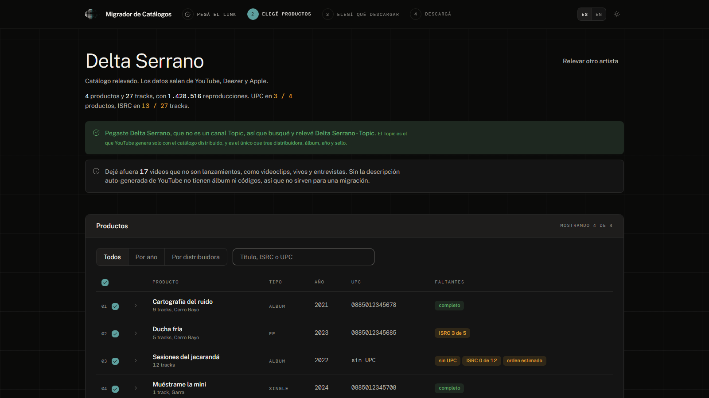

Cambiá de distribuidora
sin perder los códigos.
Pegás el link del canal de YouTube del artista y la app arma el paquete para la distribuidora nueva: los ISRC y los UPC que se pueden recuperar de Deezer, las portadas de Apple Music en la resolución más alta que haya, una hoja de ingesta para cargar, y una validación que marca lo que las distribuidoras suelen rechazar.
Gratis, de código abierto y sin cuentas: corre entera en tu computadora.
En Mac hay que abrirlo desde la Terminal la primera vez: la guía de cinco minutos dice cómo.

Para quién es
Para quien administra un catálogo y lo va a llevar a otra distribuidora: un sello chico, un manager, una distribuidora o el propio artista, con el catálogo propio o administrado con autorización del titular.
No es para vos si necesitás un XML DDEX, si el catálogo no está en YouTube con su canal Topic, o si buscás bajar música de otros.
Cómo se usa
- Pegás el link del canal, Topic o
@handledel artista, o el de cualquiera de sus temas. - Elegís qué productos migrar: la tabla marca a cuáles les falta algo.
- Elegís qué descargar: planilla y validación, portadas, y audio si activaste ese módulo.
- Descargás un ZIP con una carpeta por producto, y la app te dice qué sigue.
Preguntas frecuentes
- ¿Funciona con mi distribuidora?
- No se conecta con ninguna: arma los archivos y la carga la hacés vos. La hoja de ingesta trae las columnas de uso común y viene también en Excel para adaptarla.
- ¿Necesito saber programar?
- No. En Windows se instala con doble clic; en Mac hay que pegar tres líneas en la Terminal la primera vez.
- ¿Es legal?
- La app lee datos públicos de YouTube, Deezer y Apple, y está pensada para migrar un catálogo propio o administrado con autorización. Los términos lo dicen con detalle.
- ¿Adónde van mis datos?
- A ningún servidor del autor: no hay. Tu clave de YouTube queda en tu computadora.